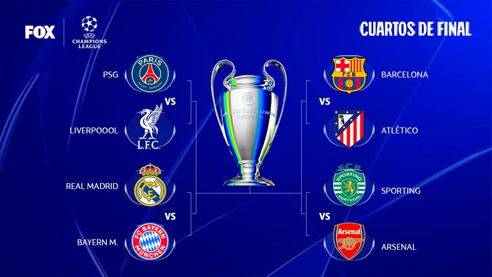

Comienzan los cuartos de la Champions: 7 abril de 2026 - Blog Deportivo

Estos son los temas tratados en Blog Deportivo este martes, 7 de abril de 2026:
- Arrancan los cuartos de Champions League: Real Madrid vs. Bayern Múnich y Sporting vs. Arsenal.
- El máximo accionista del América de Cali, Tulio Gómez, se refirió al tema de los salarios de los jugadores, entre otros asuntos del club.
- Javier Hernández Bonnet entregó nueva información sobre el estado de salud de James Rodríguez, incluso, cuando se unió a la concentración de la selección para los partidos amistosos contra Croacia y Francia.